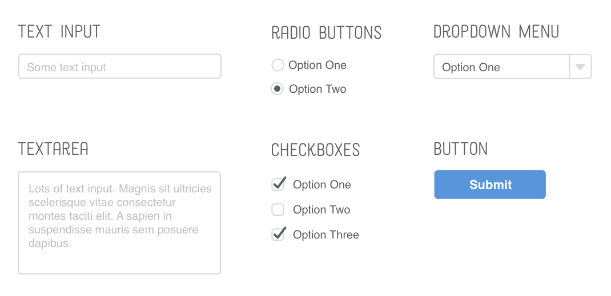

Définition
Le HTML est un langage de balisage utilisé pour la création de pages web.
C'est un acronyme pour HyperText Markup Langage. En effet, ce langage permet d'intégrer des liens hypertextes afin de faciliter la navigation
Syntaxe:
Pour ajouter dans le texte des caractères réservés pour le code html il faut utiliser des caractères spéciaux.
Voici quelques exemples usuels :
< : < / > : > / 1 espace : / 2 espace :   / 4 espace :  
Structure de base d'une page HTML
<!DOCTYPE html> → indique au navigateur que c'est un page écrite en HTML5
<html lang="en"> → défini le langage par défaut du document
<head> → opening tag
Toutes les métadatas (données non affichées) vont là
</head> → closing tag
<body>
Tout le contenu de la page va là
</body>
</html>
<head> en détail
<meta charset='UTF-8'/> → alphabet que le navigateur doit prendre en compte (pour les caractères spéciaux)
<title>Titre de la page qui se voit dans le tab du navigateur</title>
<meta name='viewport'
→ Pour désactiver le mode zoom des smartphones
<link rel='stylesheet' href='styles.css/> ATTENTION l'ordre de déclaration a de l'importance. Si on déclare un autre fichier CSS après qui entre en conflit avec celui-là c'est le dernier déclaré qui est pris en compte.
On peut aussi déclarer les polices de caractère et autres framework CSS en ajoutant des <link/>
On peut aussi rajouter des règles CSS en utilisant <style></style>. Mais ce n'est pas une bonne pratique. Il est recommandé de mettre les règles de style dans les fichiers CSS.
Liste de tags usuels du <body>
<h1..6></h1..6> : titres du plus important au moins important
BONNE PRATIQUE : n'utiliser qu'un seul élément h1 par section sémantique
<p></p> : paragraphe
<ul></ul> : liste non ordonnée
<ol></ol> : liste ordonnée
<li></li> : list item
ATTENTION les <ul> et <ol> ne peuvent être suivis que de <li> !
<dl></dl> : definition list avec des <dt></dt> termes à définir et des <dd></dd> définitions ou descriptions
<em></em> : emphasis pour un mot important (italic par défaut)
<strong></strong> : strong pour un mot très important (gras par défaut)
ATTENTION <em> et <strong> ont une portée sémantique donc à utiliser à bon escient !
<mark></mark> : marque le contenu en le surlignant mais pas de signification sémantique. S'utilise en général en dynamique comme lors d'une recherche par un utilisateur par exemple
<span></span> : contenant générique inline-content sans sens sémantique
<div></div> : contenant générique block-level. Il s'applique quand un contenant sémantique ne peut l'être
<br> ou <br/> : retour à la ligne
<hr> ou <hr/> : ligne horizontale de séparation
<a href='lien' target='_blank'><a/> : "anchor" qui créé un lien hypertexte (cf. les différents types de liens href)
l’attribut target sert à ouvrir le lien dans un autre onglet s'il est égal à _blank. Il est bien évidement possible de mettre autre chose que du texte entre les <a> pour en faire un lien cliquable (une image par exemple)
Cas des tags de media
<img src='photo.jpg' alt='remplace l'image si elle ne s'affiche pas'> : affiche une image
<video src='video.mp4' width='320' height='240' controls loop>Video Not Supported</video> : affiche une video située à l'adresse src de taille 320X240 avec les boutons de contrôle (play/pause) qui tournera en boucle. Si le navigateur ne peut pas diffuser la vidéo il écrira le texte encapsulé
Il est reccomandé de mettre le son en mute si le lancement de la vidéo est automatiquement
Il est possible de mettre une image de fond quand la vidéo ne tourne pas avec l'attribut poster='image.png'
On peut aussi mettre plusieurs vidéos source en encapsulant <source src='video.mp4'>
<audio src='audio.mp3' autoplay controls loop></audio> : Pour du son. Comme pour les vidéos il est ainsi possible de mettre plusieurs formats en encapsulant dans audio <source src='audio.mp3' type='audio/mp3'>
Quand on utilise <source> il est reccommandé de spécifier le format de l'audio ou de la vidéo dans type pour que le navigateur puisse choisir le plus adapté
<embed/> : contient un media (video, audio...) qui peut être ajouté à d'autres sites web
<iframe></iframe> : sert à intégrer tout ou partie d'un autre site web (video YT par ex)
ATTENTION comporte des risques car est une porte d'entrée pour les hackers donc à utiliser avec l'attribu sandbox
On peut encapsuler un contenu de repli avec par exemple un <p><a href='lien de repli'>Lien<a/></p>
Les différents types de liens
Absolu : lien écrit en entier. Principalement pour envoyer vers un autre site
Relatif : lien dans le même dossier relatif au fichier sur lequel on travail.
./sous-dossier/fichier si l’élément recherché est dans le même dossier et ../../fichier s'il est dans un dossier parent (on remonte autant de fois que nécessaire).
Root-relative : lien relatif à la racine du site web (mon-site.com par exemple). Ici on utilise / dont le premier représente la racine du site (ex /dossier/fichier → on n'écrit pas mon-site.com avant le premier /)
Liste des tags sémantiques
<header></header> : partie introductive pour une page (logo, nav), article (synopsis) ou section (titre). Il est de bonne pratique de mettre le nom, logo et navigation principale d'un site dans un <header>
<nav></nav> : pour les éléments de navigation (liens header ou footer, sidebar, …)
<main></main> : encapsule le contenu dominant d'une page
<article></article> : regroupe des éléments qui ont un sens même en dehors du site (un article de presse, un post de blog...)
<section></section> : comme un article mais n'a pas de sens seul. Pour une partie définie d'un article (un chapitre) ou plusieurs articles sur un même sujet. C'est plus explicite que d'utiliser un <div>. Permet de segmenter sans se référer à l'ordre des <h>.
<aside></aside> : Pour signifier que des informations ne font pas partie de l'élément dans lequel elles se trouvent. Par exemple des définitions de mots, commentaires, citations, biographie ou une pub
<figure></figure> : une illustration (image, diagramme,...)
<figcaption></figcaption> : décrit l'illustration à laquelle il est associé. Le <figcaption> est encapsulé dans le <figure>
<footer></footer> : partie finale d'une page (nav en bas de page), article (bio de l'auteur), le site entier (copyright)
<time></time> : Pour indiquer au moteur de recherche de quand date la page. S'écrit <time datetime='année-mois-jour 17:35-0200'> heures en 24h puis timezone
<address></address> : pour une fiche contact (possible d'utiliser 'mailto:nomprenom@site.com')
Les anciens navigateurs ne connaissent pas les tags sémantiques donc pour qu'ils soient considérés comme des div il faut écrire dans le fichier CSS :
section, article, aside, footer, header, nav {
display: block;
}
Cas des attributs id
Il est possible de donner un id unique à un élément HTML. L'id est unique car il correspond à un fragment d'URL.

Il faut éviter de s'en servir comme selector pour notre CSS.
Par contre il est très utile pour créer des liens entre les différentes sections d'une page :
<a href='#sommaire'Sommaire><a/> : Pour aller au sommaire
Ou entre différentes pages d'un même site :
<a href='index.html#sommaire'Sommaire du site><a/> : Pour aller au sommaire du site sur la page Index
Les id sont aussi indispensables pour lier les labels des input (cf forms)
Les Forms
Les Forms servent à collecter des informations saisies par un visiteur du site (mail, rédaction de blog, paiement...)

Action détermine où l'information est envoyée et method détermine le protocol HTTP pour l'envoyer. Il peut être POST ou GET (par convention ils sont écrits en majuscules)
On peut collecter les informations grâce à différents outils :
<a href='index.html#sommaire'Sommaire du site><a/> : Pour aller au sommaire du site sur la page Index
Syntaxe des Forms 1/4

Type text
<div class='form-row'>
<label for='full-name'>Name</label> → relier le label en utilisant for=id de l'input
<input id='full-name' name='full-name' type='text'> → l'id est pour pouvoir le relier au label, "type" détermine le type d'input. Il est important de donner un nom car au final ça enverra name=valeur entrée par l'utilisateur. Il est possible d'attribuer une valeur par défaut à value (la case texte est ainsi préremplie)
Type email
<label for='email'>Email</label>
<input id='email' → exemple qui apparaît en grisé dans le champ créé
name='email'
type='email' → n'accepte que les emails
placeholder='joe@example.com'/>
Type password
<label for='user-password'>Password :</label>
<input id='user-password' name='user-password' type='password'/> → case texte qui cache ce qu'écrit l'utilisateur avec des *
Syntaxe des Forms 2/4
Type date
<label for='naissance'>Votre date de naissance :</label>
<input id='naissance' name='naissance' type='date'/>
Type URL
<label for='site'>Entrez votre site :</label>
<input id='site' name='site' type='url'/>
Type numbers
<label for='years'>Years of experience :</label>
<input id='years' name='years' type='numbers' step='1'/> → créé un menu déroulant de chiffres
Type range
<label for='volume'>Volume Control :</label>
<input id='volume' name='volume' type='range' min='0'max='100'step='1'/> → permet de borner le choix de l'utilisateur
Type TextArea
<label for='abstract'>Abstract</label>
<textarea id='abstract' name='abstract' rows='5' cols='30'/><textarea/> → Pour un text area. On peut déterminer le nombre de colonnes et de lignes
Syntaxe des Forms 3/4
Type Radio
<fieldset class='form-row'> → encapsuler les boutons radio dans un <fieldset>
<legend>Type of talk</legend> → équivalent du label pour les radio. En effet il n'y a qu'un seul titre pour tous les boutons qui sont liés (on ne peut choisir qu'un seul bouton!). Or ils ont des id différents puisque les id sont uniques.
<input id='talk-type-1' talk-type='site' type='radio' value='main-stage'/> → value est la valeur qui sera renvoyée si l'utilisateur sélectionne ce bouton
<label for='talk-type-1'>Main Stage</label> → c'est ce qui est affiché à côté du bouton
<input id='talk-type-2' talk-type='site' type='radio' value='workshop' checked/> → Bouton selectionné par défaut
<label for='talk-type-2'>Workshop</label>
</fieldset>

Syntaxe des Forms 4/4
Type dropdown menu
<label for='t-shirt'>T-Shirt Size :</label>
<select id='t-shirt' name='t-shirt'> → Pour un dropdown menu <datalist> marche aussi à la place de select. Avec select l'utilisateur n'a le choix qu'entre les options écrites dans le code. Avec datalist il peut en choisir une autre
<option value='xs'>Extra Small</option>
<option value='s'>Small</option>
<option value='m'>Medium</option>
<option value='l'>Large</option>
</select>
Type checkbox
<label for='scales'>Scales</label>
<input id='scales' name='scales' type='checkbox' checked/>
<label for='horns'>Horns</label>
<input id='horns' name='horns' type='checkbox'>
Type Bouton
<div class='form-row'>
<button>Submit</button>
</div> → Pour soumettre le form
Validation d'un form à priori
Il existe des validations du côté du serveur (vérification d'adéquation login – mot de passe) mais aussi des validations côté client (vérification en direct que la saisie de l'utilisateur est adéquate avant de l'envoyer vers le serveur)
Inputs obligatoires : <input id='allergies' name='allergies' type='text' required>
Min et max pour nombres : <input id='guests' name='guests' type='numbers' min='1' max='4'> → fonctionne aussi avec range. Par contre n'empêche pas l'utilisateur d'écrire un nombre qui n'est pas dans le range
Vérification de la longueur d'un texte :
<input id='summary' name='summary' type='text' minlength='5' maxlength='250'>
Vérification que la saisie correspond bien à ce qui est attendu grace à pattern :
Par exemple pour un numéro de carte de crédit il faut que ce soit 14 à 16 chiffres [0-9]{14,16}
<input id='payment' name='payment' type='text' pattern='[0-9]{14,16}'>
[a-zA-Z0-9]+ : toutes les lettres minuscules et majuscules et tous les chiffres rien de plus. Le + sert à dire que chaque caractère peut être utilisé plusieurs fois.
Autres attributs utiles & organisation des forms
Attributs:
autocomplete='on' remplis un champ automatiquement s'il a déjà été remplis ailleurs
autofocus='autofocus' attribue le focus dans ce champ dès le chargement de la page
placeholder='ex : Nico' donne en grisé une valeur dans une zone de texte
checked='checked' case précochées
selected='selected' pour sélectionner une option à l'affichage
Organiser ses formulaires avec fieldset :
Permet de regrouper des éléments entre eux comme par exemple les données perso puis les loisirs :
<fieldset><legend>données perso :</legend> les options ou inputs pour les données perso </fieldset>
puis <fieldset><legend>loisirs :</legend> les options ou inputs pour les loisirs </fieldset>
Les tableaux
<table border='1'> → tag pour créer un tableau. L’attribut broder détermine l'épaisseur du quadrillage mais il vaut mieux le régler dans CSS !
<thead> → A utiliser pour les grands tableaux. Ne contient que les titres (th)
<tr> → tag pour créer une ligne dans le tableau (1ère ligne)
<th></th> → tag "table heading" pour les titres. Celui ci est vide car c'est la case en haut à gauche du tableau
<th scope='col'>Saturday</th> → titre de la première colonne. L'attribut scope précise qu'il s'agit d'un titre de colonne.
<th scope='col'>Sunday</th>
</tr>
</thead>
<tbody> → A utiliser pour les grands tableaux. Ne contient que le corps du tableau sans les titres (th)
<tr>
<th scope='row'>Temperature</th> → titre de la première ligne. L’attribut scope précise qu'il s'agit d'un titre de ligne.
<td>73</td> → tag « table data » pour les données
<td rowspan="2">81</td> → l’attribut rowspan sert à faire déborder la data dans 2 cases contigues en ligne. Colspan existe aussi.
</tr>
</tbody>
<tfoot>
→ A utiliser pour les grands tableaux pour la dernière ligne (total par exemple)
<tr>
<th>Total</th>
<td>$22M</td>
<td>$12.5M</td>
</tr>
</tfoot>
</table>
Une bonne pratique semble être de mettre d'abord thead puis tfoot et enfin tbody.